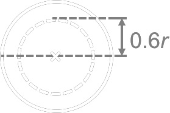

High Energy Photon Beam
(from 1 - 50 MeV e-)
(TRS-398 Ch.6)
|
\( D_{w, Q} = \)
\( N_{D, w, Q} \)
\( M_{corr} \)
\( = \)
\( \left( \left( \frac{N_{D, w, Q}}{N_{D, w, Q_0}} \right) ~ N_{D, w, Q_0} \right) \)
\( M_{corr} \)
\( = \)
\( ( k_{Q, Q_0} ~ N_{D, w, Q_0} ) \)
\( M_{uncorr} (k_{TP} ~k_H ~k_{pol} ~k_{s} ~k_{ele} ) \)
where
| \( k_{Q, Q_0} \) |
Beam Quality Correction Factor |
← chamber behaviour under difference beam quality
←
chamber model
beam quality
|
| \( N_{D, w, Q_0} \) |
Calibration Factor |
← chamber behaviour relative to traceable standard
= ? Gy(nC)-1
|
| \(M_{corr}\) |
CORRECTED Dosimeter Reading
at beam quality Q
|
which is defined as
\[ M_{corr} = (M_{raw} - M_{bg})~k_{TP}~k_H~k_s~k_{pol}~k_{ele} \]
where
| elec |
= |
electrometer |
| H |
= |
humidity |
| pol |
= |
polarity
\( k_{pol} = \large \frac{|M_+| + |M_-|}{2M} \)
|
| s |
= |
ion recombination
\( k_{s} = a_0 + a_1 \large{ \frac{M_1}{M_2} } \normalsize{a_2} \large{ \left( \frac{M_1}{M_2} \right)^2 } \)
especially when dose rate ↑
e.g. FFF
|
| TP |
= |
temperature and pressure
\( k_{TP} = \large \frac{273.2 + T}{273.2 + T_0} \frac{P_0}{P} \)
Ideal Gas Law:
|
\[pV = nRT\]
\[ \frac{p}{T} = \frac{nR}{V} \]
\[ k_{TP} = { \rho_0 \over \rho' } \]
|
where R = ideal gas constant
= kB NA
kB = Boltzmann constant
NA = Avogadro constant
n = number of moles
p = pressure
V = volume
T = temperature (273.15 + C = K)
|
|
|
| \(D_{w,Q}\) |
Absorbed Dose in Water |
← at reference depth \(z_{ref}\)
at beam quality \(Q\)
|
|
Steps
| 1. Verify \(d_{max}\) and \(D_{max}\) |
|
2. Measure \(D_5\) or \(D_{10}\)
|
→ percentage depth dose at \(d_{ref}\)
if measure at \(d_{max}\), electron contamination affect the dose
|
| 3. Measure \(TPR_{20,10}\) |
for \(k_{Q, Q_0}\) |
| 4. Determine \( k_{TP} \) |
|
| 5. Determine \(k_s\) |
Two Voltage Method
keep the MV, MU and MU/min constant,
take reading \(M_1\) @ normal bias voltage \(V_1\) ,
take reading \(M_2\) @ \(V_2\) where \(V_1/V_2\) ≥ 3,
calculate \(k_s\) using
\(k_s = a_0 + a_1 \left( \large \frac{M_1}{M_2} \right) + a_2 \left( \large \frac{M_1}{M_2} \right)^2 \)
where \(a_0\), \(a_1\) and \(a_2\) can be found in TABLE 4.VII in TRS-398
|
|
| Electron Beam
(3 - 50 MeV)
|
| Quick Summary |
|
General |
MV Photon |
kV Photon |
Electron |
| \(z_{ref}\) |
|
|
|
\(0.6 R_{50} -0.1 \) g cm-2 |
| Chamber |
|
cylindrical |
|
parallel plate
(< 10 MeV mandatory)
(cylindrical might be used when > 10 MeV)
|
Effective Point
of Measurement |
|
0.6 \(r_{cyl}\)
e.g. 0.6 cc farmer r = 3 mm
∴ 1.8 mm above centre

|
|
centre of the window,
on the inner surface of the entrance window
(cylindrical: 0.5 \(r_{cyl}\))
|
| Phantom |
Water Phantom
> 5 cm from max field edge
> 5 g cm -2 from max depth
|
|
|
|
| Beam Quality Index |
|
TPR20, 10
:) independent on e- contamination
|
|
\(R_{50}\) = depth in water at 50% depth-dose curve
@ 100 SSD, 10×10 FS
/ 20×20 FS (\(E_0 > 16 MeV\))
\( = 1.029 ~ R_{50,ion} - 0.06\) g cm-2 for \(R_{50,ion}\) ≤ 10 g cm-2
\( = 1.059 ~ R_{50,ion} - 0.37\) g cm-2 for \(R_{50,ion}\) > 10 g cm-2
|
\(r_{cyl}\) = cavity radius |
|
| Explanation |
| ND, air |
Factor converting dosimetry reading to air KERMA
|
| ND,w,Q |
Factor that convert dosimeter reading to Absorbed Dose in Water at beam quality Q
\[ N_{D, w, Q} = N_{D, air} ~ (s_{w, air})_{Q} ~ p_{Q} \]
|
Beam Quality |
| kQ,Q0 |
Beam Quality Correction Factor
At standard lab, dosimeter was calibrated using reference beam quality Q0.
At site, user beam quality Q was used
∴ dosimeter reading needs to be corrected
Definition
\(k_{Q, Q_0} = \) \( \large \frac{N_{D, w, Q}}{N_{D, w, Q_0}} \)
Obtained By Measurement
\( = \large \frac{ D_{w,Q} / M_Q }{ D_{w,Q_0} / M_{Q_0} } \)
Theoretically, \(k_{Q,Q_0}\) can also be calculated, using Bragg-Gray theory, we have
\( \large = \frac{ (s_{w, air})_Q }{ (s_{w, air})_{Q_0}} ~ \frac{(W_{air})_{Q}}{(W_{air})_{Q_0}} ~ \frac{p_Q}{p_{Q_0}}\)
where
sw, air = water-air stopping power ratio
Wair = mean energy needed to produce 1 ion pair
p = perturbation factor
For therapeutic e- and photon beam where Bragg-Gray condition is fulfilled, we can assume (Wair)Q=(Wair)Q0 , hence
\[ k_{Q, Q_0} \approx \frac{ (s_{w, air})_Q }{ (s_{w, air})_{Q_0}} ~ \frac{p_Q}{p_{Q_0}}\]
* not applicable to kV photon beam ∵ Bragg-Gray condition not applied
|
| kQ,Qcross |
Cross calibration of parallel plate chamber against a secondary cylindrical chamber
Consider an intermediate beam quality Qint, where
\[ k_{Q, Q_{cross}} = \frac{ k_{Q, Q_{int}} }{ k_{Q_{cross}, Q_{int}} } \]
|
| Q0 |
Reference Beam Quality (Co-60) |
Dosimeter Correction Factors (difference at site and at standard labs) |
| MQ |
|
| pQ |
Overall Perturbation Factor
Consider when determining kQ, Q0
\[ p_Q = p_{cav} ~ p_{cel} ~ p_{dis} ~ p_{wall} \]
where
pcav = air cavity perturbation factor
pcel = central electrode perturbation factor
air-equivalent response
pdis = displacement perturbation factor
= using effective point of measurement
pwall = chamber wall perturbation factor
account for the difference in attenuation of wall from phantom
wall attenuation in PHOTON → negligibly small
wall attenuation in ELECTRON ← effective point of measurement
|
Phantom |
| cpl |
Distance scaling factor to obtain water equivalent depth of plastic phantom |
| hpl |
Fluence scaling factor |
|